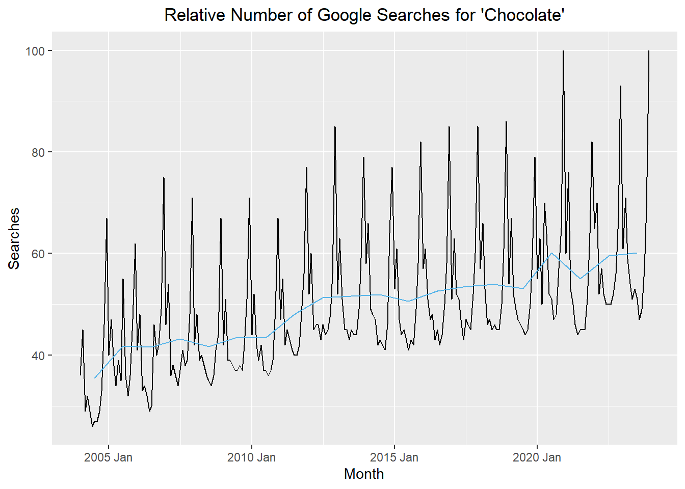

# load packages
if (!require("pacman")) install.packages("pacman")
pacman::p_load("tsibble", "fable",
"feasts", "tsibbledata",
"fable.prophet", "tidyverse",
"patchwork", "rio")
# read in the data from a csv
chocolate_month <- rio::import("https://byuistats.github.io/timeseries/data/chocolate.csv")
# define the first date in the time series
start_date <- lubridate::ymd("2004-01-01")
# create a sequence of dates, one month apart, starting with start_date
date_seq <- seq(start_date,
start_date + months(nrow(chocolate_month)-1),
by = "1 months")
# create a tibble including variables dates, year, month, value
chocolate_tibble <- tibble(
dates = date_seq,
year = lubridate::year(date_seq), # gets the year part of the date
month = lubridate::month(date_seq), # gets the month
value = pull(chocolate_month, chocolate) # gets the value of the ts
)
# create a tsibble where the index variable is the year/month
chocolate_month_ts <- chocolate_tibble |>
mutate(index = tsibble::yearmonth(dates)) |>
as_tsibble(index = index)
# generate the ts plot
choc_plot <- autoplot(chocolate_month_ts, .vars = value) +
labs(
x = "Month",
y = "Searches",
title = "Relative Number of Google Searches for 'Chocolate'"
) +
theme(plot.title = element_text(hjust = 0.5))
choc_plotPlots Trends, and Seasonal Variation
Chapter 1: Lesson 2
Learning Outcomes
Use technical language to describe the main features of time series data
- Define time series analysis
- Define time series
- Define sampling interval
- Define serial dependence or autocorrelation
- Define a time series trend
- Define seasonal variation
- Define cycle
- Differentiate between deterministic and stochastic trends
Plot time series data to visualize trends, seasonal patterns, and potential outliers
- Plot a “ts” object
- Plot the estimated trend of a time series by computing the mean across one full period
Preparation
- Read Sections 1.1-1.4 and 1.5.1-1.5.3
Learning Journal Exchange (15 min)
- Review another student’s journal
- What would you add to your learning journal after reading your partner’s?
- What would you recommend your partner add to their learning journal?
- Sign the Learning Journal review sheet for your peer
Vocabulary and Nomenclature Matching Activity (15 min)
Comparison of Deterministic and Stochastic Time Series (10 min)
Stochastic Time Series
The following app illustrates a few realizations of a stochastic time series.
- If a stochastic time series displays an upward trend, can we conclude that trend will continue in the same direction? Why or why not?
Deterministic Time Series
The figure below illustrates realizations of a deterministic time series. The data fluctuate around a sine curve.
Class Activity: Importing Data and Creating a tsibble Object (5 min)
Recall the Google Trends data for the term “chocolate” from the last lesson. The cleaned data are available in the file chocolate.csv. Here are the first few rows of the csv:

Import the Data
Use the code below to import the chocolate data and convert it into a time series (tsibble) object. You can click on the clipboard icon in the upper right-hand corner of the box below to copy the code.
Explore R commands summarizing time series data
Estimating the Trend: Annual Aggregation (10 min)
To help visualize what is happening with a time series, we can simply aggregate the data in the time series to the annual level by computing the mean of the observations in a given year. This can make it easier to spot a trend.
For the chocolate data, when we average the data for each year, we get:
| year | value |
|---|---|
| 2004 | 35.5 |
| 2005 | 41.75 |
| 2006 | 41.5833 |
| 2007 | 43.1667 |
| 2008 | 41.6667 |
| 2009 | 43.5 |
| ⋮ | ⋮ |
| 2021 | 55.0833 |
| 2022 | 59.5 |
| 2023 | 60.1667 |
The first plot is the time series plot of the raw data, and the second plot is a time series plot of the annual means.
Show the code
# monthly plot
mp <- autoplot(chocolate_month_ts, .vars = value) +
labs(
x = "Month",
y = "Searches",
title = "Relative Number of Google Searches for 'Chocolate'"
) +
theme(plot.title = element_text(hjust = 0.5))
# yearly plot
yp <- autoplot(chocolate_annual_ts, .vars = value) +
labs(
x = "Year",
y = "Searches",
title = "Mean Annual Google Searches for 'Chocolate'"
) +
scale_x_continuous(breaks = seq(2004, max(chocolate_month_ts$year), by = 2)) +
theme(plot.title = element_text(hjust = 0.5))
mp / yp
If you want to superimpose these plots, it would make sense to align the mean value for the year with the middle of the year. Here is a plot superimposing the annual mean aligned with July 1 (in blue) on the values of the time series (in black).
Show the code
chocolate_annual_ts <- summarise(
index_by(chocolate_month_ts, year),
value = mean(value)
) |>
mutate(index = tsibble::yearmonth( mdy(paste0("7/1/",year)) )) |>
as_tsibble(index = index)
# combined plot
autoplot(chocolate_month_ts, .vars = value) +
geom_line(data = chocolate_annual_ts,
aes(x = index, y = value),
color = "#56B4E9") +
labs(
x = "Month",
y = "Searches",
title = "Relative Number of Google Searches for 'Chocolate'"
) +
theme(plot.title = element_text(hjust = 0.5))
Homework Preview (5 min)
- Review upcoming homework assignment
- Clarify questions